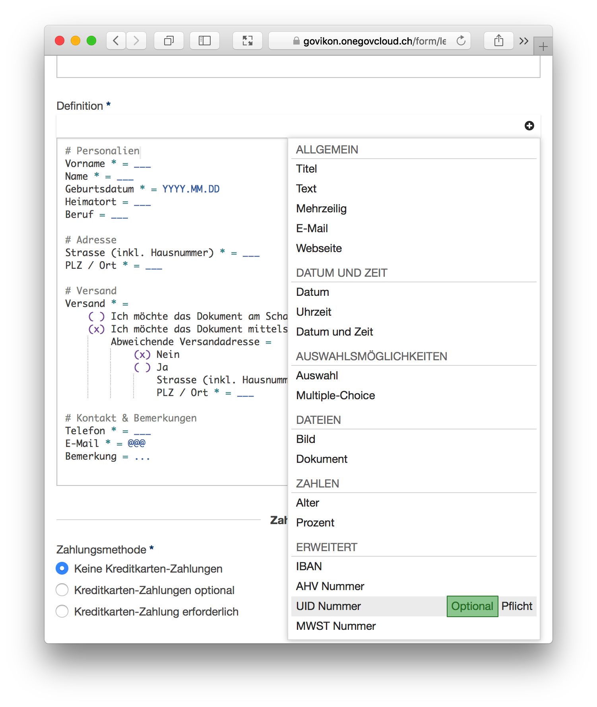

Formulare einfach erstellen mit Formcode
Für die Definition von Formularen setzt die OneGov Cloud seit Beginn auf eine Eigenentwicklung: Formcode. Mit der neusten Version wird es noch einfacher mit Formcode zu arbeiten.
Die Erstellung bzw. Definition von Formularen wird bei anderen Softwarelösungen meist über komplizierte Benutzeroberflächen realisiert. Das funktioniert gut für einfache Formulare: man verschiebt ein paar Felder in eine Box und schon steht das eigene Formular. WYSIWYG (What you see is what you get) nennt man dies im Jargon.
Für Anfänger mag dies gut sein, für Profis ist es aber ein eher mühsamer Prozess. Trotz Erfahrung wird man nicht wirklich schneller im Erstellen von Formularen. Auch fehlt meist die Möglichkeit das ganze Formular oder einen Teil davon in ein anderes Formular zu kopieren.
Formcode
Statt auf ein komplexes UI Tool haben wir von Anfang an auf eine Art eigene Programmiersprache gesetzt. Intern nennen wir unsere Programmiersprache "Formcode".
Formcode ermöglicht das einfache Erstellen von Formularen ganz ohne komplizierte Benutzeroberfläche. Dabei sollte der Code zur Definition eines Formulars möglichst einem Formular - wie es als Eingabemaske aussieht - ähneln. Wie die untenstehende Formulardefinition in Formcode zeigt, gelingt dies recht gut.

Nichts für Anfänger?
Zu unserer eigenen Überraschung durften wir bald feststellen das viele unserer Benutzer mit dem Code ganz gut zurecht kommen. Anhand der Beispiele, welche wir mitliefern, wurden effektiv eigene Formulare ohne weitere Anleitung erstellt.
Verständlicherweise haben wir mehrfach Anfragen nach einer Dokumentation erhalten. Eine solche gab es bis heute noch nicht. Dokumentationen sind zwar nützlich, müssen aber gepflegt werden. Zu oft geschieht dies über die Jahre zu wenig und die Dokumentation veraltet und wird unbrauchbar.
Vorlagen
Als Alternative zu einer Dokumentation haben wir neu eine Sammlung von Vorlagen zusammengestellt. Das erlaubt das Zusammen-Klicken von Formularen, ohne dass das Know-How von Formcode verloren geht. Ein versierter Benutzer mit etwas Übung wird den Code weiter direkt tippen und arbeitet so effizienter. Ein neuer Benutzer kann dank der Snippets selbstständig neue Formulare erstellen.
Formcode hat noch einen weiteren Vorteil; in den Snippets erscheinen bisher unbekannte Arten von Formularfeldern. Wussten Sie beispielsweise dass wir ein Feld für die Unternehmens-Identifkationsnummer inkl. Validierung haben?
OneGov Cloud - Smart Government Platform: https://onegovlcoud.ch
